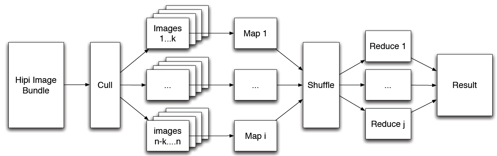
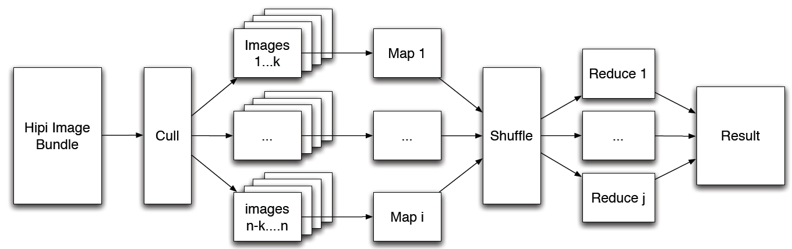

Overview
HIPI is an image processing library designed to be used with the Apache Hadoop MapReduce parallel programming framework. HIPI facilitates efficient and high-throughput image processing with MapReduce style parallel programs typically executed on a cluster. It provides a solution for how to store a large collection of images on the Hadoop Distributed File System (HDFS) and make them available for efficient distributed processing. HIPI also provides integration with OpenCV, a popular open-source library that contains many computer vision algorithms (see covar example program to learn more about this integration).
HIPI is developed and maintained by a growing number of developers from around the world.
The latest release of HIPI has been tested with Hadoop 2.7.1.

The primary input object to a HIPI program is a HipiImageBundle (HIB). A HIB is a collection of images represented as a single file on the HDFS. The HIPI distribution includes several useful tools for creating HIBs, including a MapReduce program that builds a HIB from a list of images downloaded from the Internet.
The first processing stage of a HIPI program is a culling step that allows filtering the images in a HIB based on a variety of user-defined conditions like spatial resolution or criteria related to the image metadata. This functionality is achieved through the Culler class. Images that are culled are never fully decoded, saving processing time.
The images that survive the culling stage are assigned to individual map tasks in a way that attempts to maximize data locality, a cornerstone of the Hadoop MapReduce programming model. This functionality is achieved through the HibInputFormat class. Finally, individual images are presented to the Mapper as objects derived from the HipiImage abstract base class along with an associated HipiImageHeader object. For example, the ByteImage and FloatImage classes extend the HipiImage base class and provide access to the underlying raster grid of image pixel values as arrays of Java bytes and floats, respectively. These classes provide a number of useful functions like cropping, color space conversion, and scaling.
HIPI also includes support for OpenCV, a popular open-source computer vision library. Specifically, image classes that extend from RasterImage (such as ByteImage and FloatImage, discussed above) may be converted to OpenCV Java Mat objects using routines in the OpenCVUtils class. The OpenCVMatWritable class provides a wrapper around the OpenCV Java Mat class that can be used as a key or value object in MapReduce programs. See the covar example program for more detailed information about how to use HIPI with OpenCV.
The records emitted by the Mapper are collected and transmitted to the Reducer according to the built-in MapReduce shuffle algorithm that attemps to minimize network traffic. Finally, the user-defined reduce tasks are executed in parallel and their output is aggregated and written to the HDFS.
HIPI is developed and maintained by a growing number of developers from around the world.
The latest release of HIPI has been tested with Hadoop 2.7.1.
System Design
This diagram shows the organization of a typical MapReduce/HIPI program:
The primary input object to a HIPI program is a HipiImageBundle (HIB). A HIB is a collection of images represented as a single file on the HDFS. The HIPI distribution includes several useful tools for creating HIBs, including a MapReduce program that builds a HIB from a list of images downloaded from the Internet.
The first processing stage of a HIPI program is a culling step that allows filtering the images in a HIB based on a variety of user-defined conditions like spatial resolution or criteria related to the image metadata. This functionality is achieved through the Culler class. Images that are culled are never fully decoded, saving processing time.
The images that survive the culling stage are assigned to individual map tasks in a way that attempts to maximize data locality, a cornerstone of the Hadoop MapReduce programming model. This functionality is achieved through the HibInputFormat class. Finally, individual images are presented to the Mapper as objects derived from the HipiImage abstract base class along with an associated HipiImageHeader object. For example, the ByteImage and FloatImage classes extend the HipiImage base class and provide access to the underlying raster grid of image pixel values as arrays of Java bytes and floats, respectively. These classes provide a number of useful functions like cropping, color space conversion, and scaling.
HIPI also includes support for OpenCV, a popular open-source computer vision library. Specifically, image classes that extend from RasterImage (such as ByteImage and FloatImage, discussed above) may be converted to OpenCV Java Mat objects using routines in the OpenCVUtils class. The OpenCVMatWritable class provides a wrapper around the OpenCV Java Mat class that can be used as a key or value object in MapReduce programs. See the covar example program for more detailed information about how to use HIPI with OpenCV.
The records emitted by the Mapper are collected and transmitted to the Reducer according to the built-in MapReduce shuffle algorithm that attemps to minimize network traffic. Finally, the user-defined reduce tasks are executed in parallel and their output is aggregated and written to the HDFS.